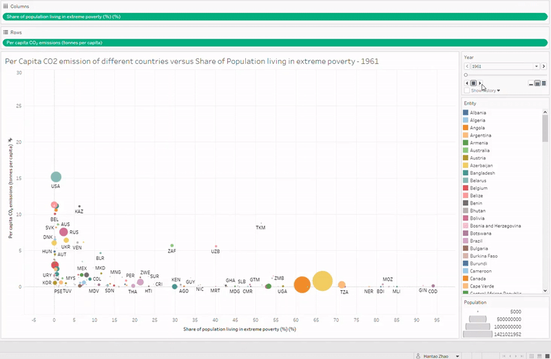
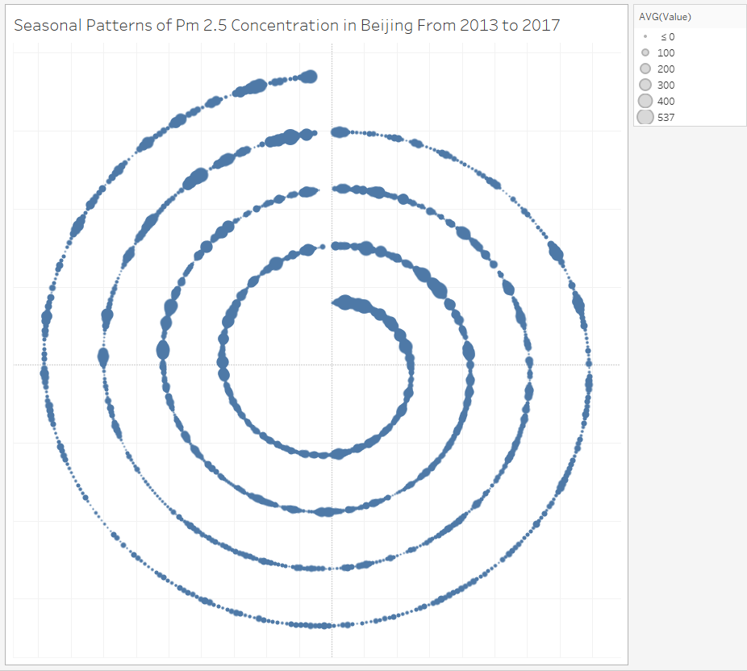
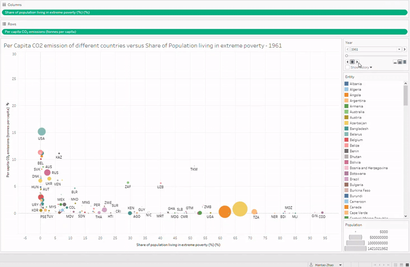
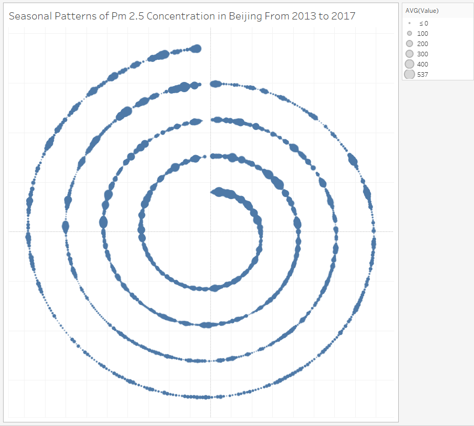

Selected Course Works
During my first semester in UMSI, I have taken the following courses. The knowledge and experience I gained from these courses are really inspiring, and helped me a lot during my internship search.
-
Implementation of Common Machine Learning Algorithms (Julia)
EECS505 Computational Data Science and Machine Learning
Use Julia to implement common machine learning algorithms, including SVD-based feature extraction, regularized least square methods, nearest subspace classifier, PCA, ICA, waveform synchronization, Procrustes analysis, etc.
Analyze different machine learning algorithms with Linear Algebra knowledge, and implement the algorithms based on Mathematical formula.
Visualization of Global Environmental Problems (Tableau)
SI649 Information Visualization
Present per capita CO2 emission of different countries using world map. Plot poverty rate versus per capita CO2 emission of different countries using scatter plots. Add time axes to observe the global trend in history.
Use spiral graph to illustrate the seasonal patterns of PM2.5 concentration in Beijing. Present visualizations in html, with text annotation and graphs.
A link to the deployed page (I did this before I learned Web Design, therefore it's pretty simple)
Analysis of the Features of Steam Games over Time (R, R Markdown)
SI618 Data Manipulation and Analysis
Apply R to pre-process the csv files. Convert strings and intervals to numeric variables, and calculate the scores using the formula suggested by Steam.
Visualize the correlations of different features with ggplot and pairplot functions. Use color-encoded multi-layer graphs to emphasize the features of different categories.
 


